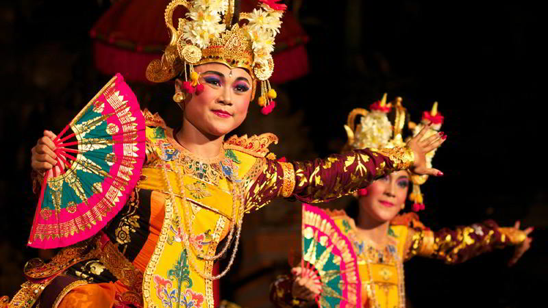

Tari Legong
Tari Legong. Indonesia itu cantik, salah satu sudut kecantikan yang cukup kentara dari Indonesia ada di Pulau Bali. Adapun salah satu pesona Bali ada dalam gerak tari tradisionalnya. Indonesia memang indah dan Bali itu indah, Tari Bali jelas indah, apalagi Tari Legong.
Legong adalah sebuah tarian klasik Bali yang terlahir dalam lingkungan Keraton Bali. Di katakan bahwa Tarian Legong adalah sumber inspirasi munculnya tari-tarian kreasi baru di Bali (Kesuma, 2011).
Legong adalah nama dari sekumpulan tarian klasik Bali dengan perbendaharaan gerak tari yang begitu komplek yang terikat dengan struktur tabuh pengiring. Konon, Legong banyak dipengaruhi oleh Gambuh, dramatari klasik Bali yang paling kaya akan gerak-gerak tari.
Kekhasan Legong juga bisa dilihat dari istilah yang membangunnya. “Leg” dimaknai sebagai gerak tari yang luwes dan lentur dan “Gong” berarti Gamelan. “Legong” dengan demikian mengandung arti gerak tari yang terikat (terutama aksentuasinya) oleh gamelan yang mengiringinya, yakni Gamelan Semar Pagulingan.
Dalam pertunjukannya, Tari Legong biasa membawakan banyak cerita, namun yang paling populer adalah cerita Lasem yang mengisahkan kasih tak sampai Prabu Lasem kepada Putri Rankesari.
Terdapat 5 struktur dalam Tari Legong yakni papeson, pangawak, pangecet, pangipuk dan pakahad (Bandem 1994). Tarian akan dimulai dengan penampilan penari yang disebut Candong (Emban) yang kemudian di ikuti oleh dua penari Legong.
Pada kisah Prabu Lasem, kedua Penari Legong ini masing-masing memerankan Prabu Lasem dan Putri Langkesari. Adapun pada cerita Jobog (Kuntir) kedua Legong ini masing-masing membawakan tokoh Subali dan Sugriwa (Bandem, 1994).
<< Kembali